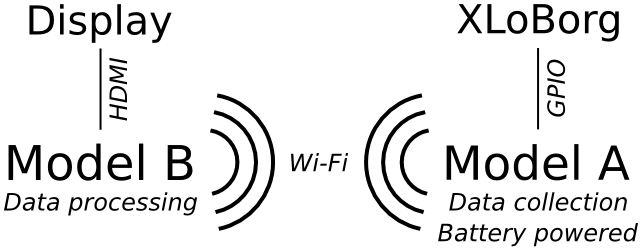

Hamish is a Research Professor in Computer Science in Sheffield currently working on various Pi-related projects at http://Pi.GATE.ac.uk/
Turning an accelerometer into a paint brush with the Raspberry Pi
Fred Sonnenwald and Hamish Cunningham, November 2013
|
Fred is currently completing a PhD in Civil Engineering at the University of Sheffield. |
|
|
Hamish is a Research Professor in Computer Science in Sheffield currently working on various Pi-related projects at http://Pi.GATE.ac.uk/ |
Thanks to Bo Meson for inspiration!
Tell us what you would do with an XLoBorg by PiBorg for a chance to win one of three XLoBorgs.
PiBorg, makers of the XLoBorg motion and direction sensor Pi add-on that this project uses, are offering three prizes for the best suggestion (in 200 words or less) for interesting things to do with the XLo. Anatomically feasible suggestions only, please :-)
To enter, simply email info@piborg.org with subject MagPi PiBrush.
Good luck!
There is a new conjunction emerging around open hardware, maker culture, and art. Remember how pop culture changed with the advent of punk in the late seventies? We seem to be witnessing a similar explosion of 'garageband' creativity in the tennies, and the Pi is proudly leading the charge for general purpose open source devices1 in this context. (The Pi foundation even has an artist in residence — Rachel Rayns.)
Open-source hardware allows people to make their own robots, cameras, or even electrocardiagraph machines by downloading schematics and incorporating any changes they need — and, typically, free open-source software is available to run these projects. 3D printers, laser cutters and CNC routers have helped this adoption of the open-everything ethos2.
There are stacks of DIY projects based on the Raspberry Pi, and the flood showns no sign of slowing. The Pi is the first general purpose device (in contrast to the magnificent but more specialised Arduino) which is very easy to cobble together with add-on electronics. The thriving community that has grown up around the Pi (including this magazine) is making a huge impact, from changes in the UK schools curriculum to the Onion Pi anti-surveillance device, to BrickPi's new brains for old lego Robots.
This article describes the PiBrush, a simple on-screen painting system that uses the XLoBorg motion and direction sensor add-on board from PiBorg. The XLoBorg adds an accelerometer and a magnetometer (compass) to your Pi and makes all sorts of motion-based interaction possible — like a Kinect but free and open. Here's a PiBrush picture:

The PiBrush is an interactive art and technology exhibit (a rather grand name for something so small!) that simulates flicking paint off the end of a paintbrush onto canvas — as Jackson Pollock famously did in the 1940s and 50s. It utilizes two Raspberry Pis (one Model B and one Model A), one XLoBorg, a battery pack, a display, and two Wi-Fi dongles. The Model A is held by the user and waved around. It collects acceleration data with the XLoBorg, which it then transmits via ad hoc Wi-Fi to the Model B, which processes the data collected into paint droplets and displays them on the screen, connected via HDMI. Functionally it looks like this:

And here's the hardware (we may improve on the elastic band in future models :-)). The model A (client):

And the model B (server):

(The red button on the server saves the picture and starts another.)
The hardware for this project is fairly straightforward. The XLoBorg plugs directly into the GPIO pins as a block on the client, and a push button simply connects a ground and GPIO pin on the server. The software is where the challenge lies: intermediate to advanced code to write, using Python and some basic physics.
The code is available on GitHub and as a Rasbian package in an Ubuntu PPA. The core is in accel_client.py which runs on the Model A and accel_server.py which runs on the Model B. The former reads from the sensor and sends data across the network; the latter processes the data and displays the output on the screen.
The server script is the meat of the programming is as it handles the physics simulation and display. First, as we're dealing with sensor input we want to use something called a moving average to store accelerometer readings, which is initialised like this:
# length of moving average array AL = 20 # accelerometer storage for moving average AXa = numpy.zeros((AL, 1)) AYa = numpy.zeros((AL, 1)) AZa = numpy.ones((AL, 1)) # array index for accelerometer data Ai = 0A moving average is the average of, in this case, the last 20 readings. Some sort of filtering is almost always necessary when dealing with the sort of analog input data that comes from an acceleromter to prevent sudden jumps in the readings from having an undue impact on the processing. A moving average is a convenient and easy way to do it. We simply input the current reading at index Ai and then increment Ai until it exceeds AL, then wrap it back around:
AXa[Ai] = float(a[0])
AYa[Ai] = float(a[1])
AZa[Ai] = float(a[2])
Ai = Ai + 1
if Ai == AL:
Ai = 0
(Here a is an array of the acclerometer data as read over the network.) I've
used numpy because it executes more quickly than standard Python lists, and
there are convenient functions to make things simpler like .ones() to
initialze all of AZa to a value of one — we assume a starting 1G of gravity
downwards.
If you don't know, a function is a bit of code written in such a way that it can be executed from different places in the main program. Each call you can pass different arguments (input parameters) that will be operated on and a new result returned. There are two quite important functions used in the code that have to do with polar coordinates. If you know X, Y, Z, those are Cartesian coordinates.
def polar(X, Y, Z):
x = numpy.linalg.norm([X, Y, Z])
if (x > 0):
y = -math.atan2(Z, X)
z = math.asin(Y / x)
else:
y = 0
z = 0
return (x, y, z)
Here polar takes a Cartesian X, Y, and Z coordinate and returns the
equivalent polar coordinates, where x is R, is the radius to the point from
the origin, and y is A and z is B. The latter are the angular rotation about
the Z and Y axis. Because the Model A may be rotated relative to the screen,
we need a convenient mechanism for rotating the acceleration vectors recorded
to ones we can use on the screen. In order to do that though we need to
subtract the Earth's gravitational field. This is what the polar coordinates
are used for. It's an extension of the regular
subtraction of vectors. This function was based on
this forum
thread.
def cartesian(X, A, B):
x = 0 # don't bother - isn't used
y = X * math.sin(B) * math.sin(A)
z = X * math.cos(B)
return (x, y, z)
Here cartesian as you might suspect does the opposite of polar, taking the
distance X and rotations A and B and turns them back into Cartesian
coordinates. As this code is only used as part of getting coordinates ready
for the screen, x, as the coordinate into the screen, is permanently set to 0.
This is an optimization to help the code run better on the Pi. The code here
is based on this
explanation of Cartesian and polar coordinates.
The main program consists of an infinitely repeating loop that reads the accelerometer data over the network, applies the earlier moving average, and then processes it.
# move time forward
dt = time.time() - last_time
last_time = time.time()
The first thing to be done each loop is to move time forwards. Ideally
execution time for each loop is identical and dt (the timestep) is constant.
However, this isn't the case, so by knowing how long it's been since the last
loop we can know how far to move things, i.e., distance = velocity * time.
# moving averages for acceleration
AX = numpy.sum(AXa) / AL
AY = numpy.sum(AYa) / AL
AZ = numpy.sum(AZa) / AL
# combined acceleration for
# working out resting gravity
A = math.fabs(numpy.linalg.norm([AX,
AY, AZ]) - 1)
After reading in the accelerometer data and putting it in the AXa, etc.,
arrays, we then need to take the average of that array. .sum() adds up the
values in an array and then to do an average we divide by the number of
elements AL and so AX, etc., has the moving average.
The total combined acceleration A is worked out by calculating the Euclidean distance from 0 to the acceleration vector position using linalg.norm(). At rest this should work out to just about 1 (remember we're working in acceleration in G(ravities), which is why we subtract 1. We then use .fabs() so that we always have a positive result which indicates the difference between acceleration due to gravity and the experienced acceleration. At rest this number should be very small.
# in a slow moment store most recent
# direction of the gravitational field
if A < 0.02 and (last_time - last_G) > 0.12:
GX = AX
GY = AY
GZ = AZ
(PGR, PGA, PGB) = polar(GX, GY, GZ)
last_G = last_time
# rotate to screen coordinates
# and subtract gravity
(PAR, PAA, PAB) = polar(AX, AY, AZ)
(GAX, GAY, GAZ) = cartesian(PAR,
PAA - PGA + PSGA, PAB - PGB + PSGB)
GAZ = GAZ - PGR
Now that we know something about gravity and the current acceleration, we can
act on it. I've pointed out how in order to know which way the Model A is
moving, we need to know where gravity is first. We can't know it exactly, but
we can estimate it. As A is the acceleration the Model A is experiencing
excluding gravity, it's very low when the Model A isn't moving at all. This
means that the only acceleration being experienced is due to gravity and so we
can take the estimate and then turn it into polar coordinates. (Provided we
haven't just done all of this.)
For every loop we need to actually do the gravity subtraction and rotation for the screen. We turn the current acceleration into polar coordinates and then on the next line turn them back into cartesian coordinates while subtracting the estimated rotation of the gravitational field. The GAZ line after than subtracts gravity from its absolute direction. (This is a bad explanation and to be honest I'm not entirely sure why this works, but it does!)
Perhaps the most interesting bit of what's going on every loop: the paint brush physics. This is the code that controls what happens on the screen. Everything up to this point has been to get us GAY and GAZ, two variables indicating horizontal and vertical acceleration relative to the screen. Now we get to interpret it and make something happen.
# acceleration detection for paint strokes
A = numpy.linalg.norm([GAY, GAZ])
After this, A is the total acceleration of the Model A, with respect to the
screen, ignoring gravity. This is useful. We can use this number to detect
roughly if we're speeding up or slowing down. What happens after that?
if fast == 1:
# accelerate the paint brush
VX = VX - GAY * dt * 170
VY = VY - GAZ * dt * 170
BX = BX + VX * dt * 120
BY = BY + VY * dt * 120
This bit of code is actually responsible for moving the brush, and only when we
think it's moving. This is where something called twice integration comes in.
Imagine you're in a car traveling down the motorway at 100 kph. In one hour
you will have travelled 100 km. Easy? That's simple integration, going from
velocity to displacement. Acceleration though, is the rate of change in
velocity, e.g. the speed at which the needle of the speedometer in the car
climbs. So now imagine accelerating at 1 kph per second, after 10 seconds
you'll be going 10 kph faster, so instead of 100 kph you're now going 110 kph.
Apply that to the distance you've travelled and you have twice integration.
(Fun fact: if you kept up that acceleration, after an hour you'd be going 3,700
kph and would have traveled 36,370 km. Or almost around the Earth.)
Similarly, we increment the brush velocity by the acceleration, factored by the timestep to keep the animation smooth. I've also added a factor of 170 to scale up the acceleration so it displays nicely on the screen. (This is sort of like saying that 1 pixel represents 170 meters.) The next integration is incrementing the brush position by adding on the current velocity, also factored by the timestep and scaled, this time by 120. (These values just work, but are physically nonsense.)
# add splotches.... high velocity big
# splotches far apart, low small close
if P > 0:
V = numpy.linalg.norm([VX, VY])
S = S + V
d = A * random.randint(3, 5) * 25 + V
Now that the paintbrush is moving, comes the last most important bit of code:
making paint droplets. This bit of code is only run while the paintbrush is
moving and only if there's paint on the brush. Vaguely you expect that the
further the brush has been swung the more paint I expect to come off and the
faster it's going the more paint to come off. V is calculated as the total
velocity, and S is a running displacement. d is calculated as a rough
estimtate of paint droplet spacing.
Paint droplets (probably) fly off due to two factors:
Both of these are rather complex subjects so I've sort of lumped them together as the produce similar results — paint flying off the brush. d is made up of A (our acceleration) times a random factor which is the fluid dynamics bit, and V is added for the air resistance bit. The random factor makes things a bit more interesting, perhaps taking into account things like globs of paint or hairs in the brush getting tangled. 25 is the scaling factor this time. (This applies to the acceleration term only as velocity was already scaled before.)
if S > d:
S = S - d
P = P - pow(A*4, 2) * math.pi
pygame.draw.circle(screen, (COLR, COLG,
COLB), (int(BX), int(BY)), int(A*45))
draw = 1
If we've travelled further than the expected paint droplet seperation according
to our, er, precise simulation, we need to draw a paint droplet! We calculate
the amount of paint that was in the droplet arbitrarily as the acceleration
times four, squared, times π (pi). (Area of a circle formula.) This is
subtracted from P, the paint on the paintbrush variable. The paint droplet
actually drawn on the screen is done, assuming they're cricles, with the
Pygame function
draw.circle().
We're drawing on the screen, in our random color at the paintbrush position
(BX, BY). A*45 is the paint droplet radius, with 45 as another scaling
factor.